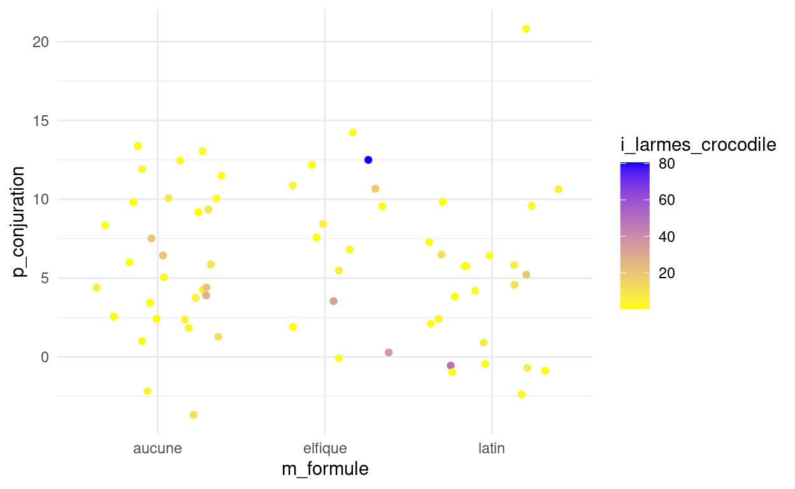

Cliquer ici pour les diapos de cours
Cliquer ici pour les diapos de cours
Pour cette partie nous allons continuer à travailler sur le jeu de données potions.
Pour tous les exercices de cette partie, les packages dplyr et ggplot2 ainsi que le jeu de données potions seront d’ores et déjà chargés et disponibles dans l’environnement.
5.1 Premier graphique: histogramme simple
Complétez le code ci-dessous pour tracer l’histogramme correspondant à la propriété p_alteration (couleur de remplissage: blue).
ggplot(_____, aes(x=____)) +
geom_histogram(fill=_____)ggplot(potions, aes(x=p_alteration)) +
geom_histogram(fill="blue")5.2 Choix de geom
5.3 Geoms en tous genres
Complétez le code pour créer les graphiques suivants (il y a à chaque fois 3 éléments importants à spécifier: le jeu de données, les variables x et (éventuellement) y, et la nature du geom!):
-un nuage de points montrant p_alteration (y) en fonction de p_resistance (x)
ggplot(potions, aes(x=___, y=___)) +
____()ggplot(potions, aes(x=p_resistance, y=p_alteration)) +
geom_point()- un boxplot montrant
p_alteration(y) en fonction dem_formule(x)
ggplot(___________________________) +
______()ggplot(potions, aes(x=m_formule, y=p_alteration)) +
geom_boxplot()- p3, un barplot (
geom_bar()) montrant les effectifs dem_preparation(x)
______________________________________
_____________ggplot(potions, aes(x=m_preparation)) +
geom_bar()5.4 Paramétrer des geoms
On a repris les 3 graphiques créés précédemment, mais cette fois on souhaite paramétrer les geoms. Complétez le code pour que
- les points soient bleus
ggplot(potions, aes(x=p_resistance, y=p_alteration)) +
geom_point(_____)ggplot(potions, aes(x=p_resistance, y=p_alteration)) +
geom_point(color="blue")- l’intérieur des boîtes soit rouge
ggplot(potions, aes(x=m_formule, y=p_alteration)) +
geom_boxplot(_____)ggplot(potions, aes(x=m_formule, y=p_alteration)) +
geom_boxplot(fill="red")- les barres soient transparentes (à 50%)
ggplot(potions, aes(x=m_preparation)) +
geom_bar(_____)ggplot(potions, aes(x=m_preparation)) +
geom_bar(alpha=0.5)5.5 Superposer des geoms
Complétez le code pour représenter la variable i_aile_papillon du jeu de données potions en superposant deux geoms:
- un geom de type histogram, et de couleur de remplissage jaune
- un geom de type rug
_____________________+
_______________+
___________ggplot(potions, aes(x=i_aile_papillon)) +
geom_histogram(fill="yellow") +
geom_rug()5.6 Mapping
Complétez le code ci-dessous pour que les trois graphiques soient trois nuages de points représentant la propriété d’invisibilité (p_invisibilite, en y) en fonction de la quantité d’aile de papillon (i_aile_papillon, en x), et
- la couleur du
geom_point()corresponde à la formule (variablem_formule)
ggplot(potions, aes(x=___, y=___)) +
geom_point(aes(____))ggplot(potions, aes(x=i_aile_papillon, y=p_invisibilite)) +
geom_point(aes(color=m_formule))- la taille du
geom_point()corresponde à la résistance (variablep_resistance)
ggplot(________, aes(_____________))+
geom_point(_________)ggplot(potions, aes(x=i_aile_papillon, y=p_invisibilite))+
geom_point(aes(size=p_resistance))- les deux conditions précédentes soient remplies pour le
geom_point()
p3 <- ggplot(____________________________)+
________(__________)ggplot(potions, aes(x=i_aile_papillon, y=p_invisibilite))+
geom_point(aes(color=m_formule,size=p_resistance))5.7 Paramètres fixes vs paramètres variables
Modifiez le code ci-dessous pour que la forme des points corresponde à un carré plein (voir l’antisèche ggplot2…)
Si vous définissez le paramètre comme une constante, vous devez le spécifier à l’extérieur de la fonction aes()…
ggplot(potions, aes(x=i_aile_papillon, y=p_invisibilite))+
geom_point(aes(size=p_resistance, color=m_formule))ggplot(potions, aes(x=i_aile_papillon, y=p_invisibilite))+
geom_point(shape=15,
aes(size=p_resistance, color=m_formule))5.8 Esthétique globale ou propre à un geom
Considérez les lignes de codes suivantes:
p <- ggplot(potions, aes(x=m_preparation, y=p_resistance, color=m_formule))+
geom_boxplot(fill="grey") +
geom_rug()5.9 Ajustement de la position
Examinez le code ci-dessous et le graphique qu’il renvoie.
Corrigez ce code pour que les effectifs des différentes coupes apparaissent les uns à côté des autres (paramètre position… consultez votre antisèche!!)
Vous pouvez voir les valeurs possibles pour ce paramètre sur votre antisèche ggplot (2ème page, “Position Adjustments”)
Attention, le paramètre de position n’est pas une esthétique…
ggplot(potions, aes(x=p_resistance))+
geom_histogram(bins=10,aes(fill=m_formule))ggplot(potions, aes(x=p_resistance))+
geom_histogram(bins=10, position="dodge",aes(fill=m_formule))5.10 Facettes
Complétez le code ci-dessous pour produire différentes facettes du même graphique en fonction du mode de préparation de la potion (3 lignes, 1 colonne)
Faites en sorte que les facettes soient en ligne et non en colonne dans l’appel à la fonction facet_grid()…
ggplot(potions, aes(x=i_givreboises, y=p_alteration, color=m_formule)) +
geom_point() +
____________ggplot(potions, aes(x=i_givreboises, y=p_alteration, color=m_formule)) +
geom_point() +
facet_grid(rows=vars(m_preparation))5.11 Allonger son tableau pour facetter
Imaginons maintenant que l’on veuille montrer le lien entre la méthode de confection de la potion (m_preparation et m_formule) et les ingrédients, de sorte que chaque ingrédient corresponde à une facette du graphique.
Cela implique que le jeu de données soit reformaté de manière à ce que l’ensemble des valeurs d’ingrédients corresponde à une même variable i_valeur(et on aura donc son pendant i_type, qui nous dira de quel ingrédient il s’agit).
On a donc besoin d’utiliser la fonction tidyr::pivot_longer(). Complétez le script ci-après pour réaliser cette opération.
potions_long=potions %>%
tidyr::pivot_longer(cols=___,
____="i_type",
names_prefix="i_",
____="i_valeur")
potions_long %>%
select(i_type,i_valeur) %>%
head()potions_long=potions %>%
tidyr::pivot_longer(cols=starts_with("i_"),
names_to="i_type",
names_prefix="i_",
values_to="i_valeur")
potions_long %>%
select(i_type,i_valeur) %>%
head()Ci-après, le tableau potions_long a déjà été créé pour vous. Complétez le code pour créer des facettes correspondant à chaque type d’ingrédient.
library(ggplot2)
library(dplyr)
potions <- readr::read_delim("http://perso.ens-lyon.fr/lise.vaudor/grimoireStat/datasets/potions.csv",
delim=";")
ggplot(potions_long,
aes(x=m_preparation, y=i_valeur, fill=m_formule))+
geom_boxplot()+
scale_y_log10()+
facet_wrap(___,
scales="free_y")ggplot(potions_long,
aes(x=m_preparation, y=i_valeur, fill=m_formule))+
geom_boxplot()+
scale_y_log10()+
facet_wrap(vars(i_type),
scales="free_y")5.12 Etiquettes et transformation d’axes
Modifiez le code ci-dessous pour que:
- les étiquettes d’axes soient “Mode de préparation” (en x) et “Pouvoir d’altération” (en y)
- l’échelle des y soit transformée par une transformation
log10 - les valeurs de l’axe x soient retranscrites (en “Par bouillon”,“Par distillation”,“Par macération”)
Consultez l’antisèche ggplot2!!!
p <- ggplot(potions, aes(x=m_preparation, y=i_pied_lutin)) +
geom_boxplot(fill="pink") +
labs(____) +
scale_y___()+
scale_x____(___)
plot(p)p <- ggplot(potions, aes(x=m_preparation, y=i_pied_lutin)) +
geom_boxplot(fill="pink") +
labs(x="Mode de préparation",y="Pouvoir d'altération") +
scale_y_log10()+
scale_x_discrete(labels=c("bouillon"="Par bouillon",
"distillation"="Par distillation",
"maceration"="Par macération"))
plot(p)5.13 Echelles de couleurs
Imaginons que je souhaite produire un nuage de points montrant p_resistance en fonction de i_graisse_troll, en faisant varier la couleur en fonction de p_conjuration.
5.14 Thème et échelle de couleur
Modifiez le code qui vous est fourni ci-dessous pour reproduire cette figure.
Il s’agit de
- modifier le thème
- modifier l’échelle colorée pour que les quantités les plus basses correspondent à la couleur jaune et les plus hautes à la couleur bleue.

ggplot(potions, aes(x=m_formule,
y=p_conjuration,
color=i_larmes_crocodile))+
geom_jitter() +
__________()+
__________(_______)ggplot(potions,
aes(x=m_formule,
y=p_conjuration,
color=i_larmes_crocodile))+
geom_jitter() +
theme_minimal()+
scale_color_gradient(low="yellow",high="blue")5.15 Rajout d’un nuage de points montrant les moyennes
Complétez le code ci-dessous pour rajouter des points bleus montrant les moyennes de propriété (donc moyennes de y) par mode de préparation.
# Vers données "en long" avec variables p_type et p_valeur
potions_long=potions %>%
tidyr::pivot_longer(cols=___,
names_to="p_type",
names_prefix="p_",
values_to="p_valeur")
# Calcul des moyennes de propriété par type de propriété
potions_moy <- potions_long %>%
group_by(____) %>%
summarise(p_moy=mean(____),
.groups="drop")
ggplot(potions_long,
aes(x=p_type,y=p_valeur)) +
geom_boxplot()+
geom_point(data=____,
aes(y=___),
col="blue")+
coord_flip()# Vers données "en long" avec variables p_type et p_valeur
potions_long=potions %>%
tidyr::pivot_longer(cols=starts_with("p_"),
names_to="p_type",
names_prefix="p_",
values_to="p_valeur")
# Calcul des moyennes de propriété par type de propriété
potions_moy <- potions_long %>%
group_by(p_type) %>%
summarise(p_moy=mean(p_valeur),
.groups="drop")
ggplot(potions_long,
aes(x=p_type,y=p_valeur)) +
geom_boxplot()+
geom_point(data=potions_moy,
aes(y=p_moy),
col="blue")+
coord_flip()